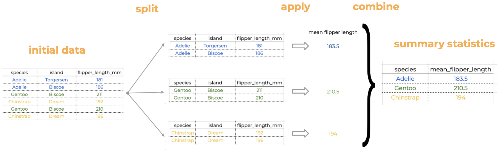
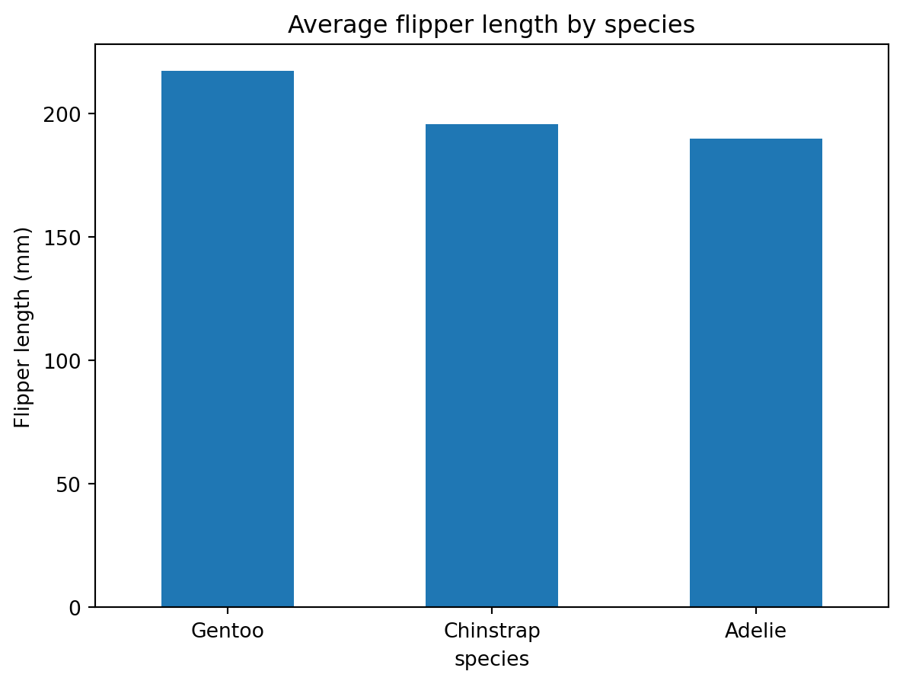

Our penguins data is naturally split into different groups: there are three different species, two sexes and three islands. Often, we want to calculate a certain statistic for each group. For example, suppose we want to calculate the average flipper length per species. How would we do this “by hand”?
We start with our data and notice there are multiple species in the species column.
We split our original table to group all observations from the same species together.
We calculate the average flipper length for each of the groups we formed.
Then we combine the values for average flipper length per species into a single table.
This is known as the Split-Apply-Combine strategy. This strategy follows the three steps we explained above:
Split: Split the data into logical groups (e.g. species, sex, island, etc.)
Apply: Calculate some summary statistic on each group (e.g. average flipper length by species, number of individuals per island, body mass by sex, etc.)
Combine: Combine the statistic calculated on each group back together.

Split-apply-combine to calculate mean flipper length
In Python we can use the groupby() method to split (i.e. group) the data into different categories. The general syntax for groupby() is
df.groupby(columns_to_group_by)
where most often we will have columns_to_group_by = a single column name (string) or a list of column names, the unique values of the column (or columns) will be used as the groups of the data frame
Example
First, if we don’t use the groupby() method, we obtain the average for the whole flipper length column:
penguins.flipper_length_mm.mean()
200.91520467836258
To get the mean flipper length by species we first group our dataset by the species column’s data:
# average flipper length per speciespenguins.groupby("species").flipper_length_mm.mean()
There’s a lot going on there, let’s break it down (remember the . can be read as “and then…”)
start with the penguins data frame, and then…
use groupby() to group the data frame by species values, and then…
select the 'flipper_length_mm' column, and then…
calculate the mean()
We can store our new data frame as avg_flipper and then graph it as a bar plot:
# average flipper length per speciesavg_flipper = penguins.groupby("species").flipper_length_mm.mean()# sort in descending order# remember to reassign to actually update dataavg_flipper = avg_flipper.sort_values(ascending=False)# plot as a bar plotavg_flipper.plot(kind='bar', title='Average flipper length by species', ylabel='Flipper length (mm)', rot=360# rotation for ticks )
<AxesSubplot:title={'center':'Average flipper length by species'}, xlabel='species', ylabel='Flipper length (mm)'>

We can also group by combinations of columns.
Example
Suppose we want to know what was the number of penguins in every island on different years. We can use the count() method to count the number of non-NA values in each column like this:
penguins.count()
species 344
island 344
bill_length_mm 342
bill_depth_mm 342
flipper_length_mm 342
body_mass_g 342
sex 333
year 344
dtype: int64
When we group by island and year we get the count of non-NA values for each column divided for each combination of island and year:
penguins.groupby(['island','year']).count()
species
bill_length_mm
bill_depth_mm
flipper_length_mm
body_mass_g
sex
island
year
Biscoe
2007
44
44
44
44
44
43
2008
64
64
64
64
64
63
2009
60
59
59
59
59
57
Dream
2007
46
46
46
46
46
45
2008
34
34
34
34
34
34
2009
44
44
44
44
44
44
Torgersen
2007
20
19
19
19
19
15
2008
16
16
16
16
16
16
2009
16
16
16
16
16
16
Let’s say we want to plot the surveyed population per year and island. We could then use a “one liner” to do it in this way:
Halina Do-Linh, Carmen Galaz García, Matthew B. Jones, Camila Vargas Poulsen. 2023. Open Science Synthesis training Week 1. NCEAS Learning Hub & Delta Stewardship Council.